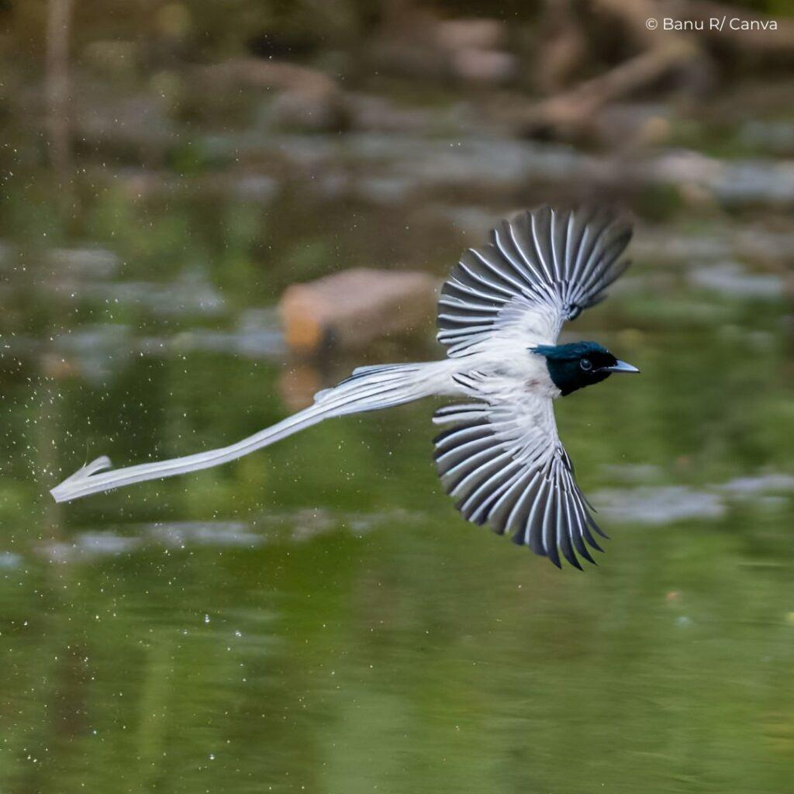
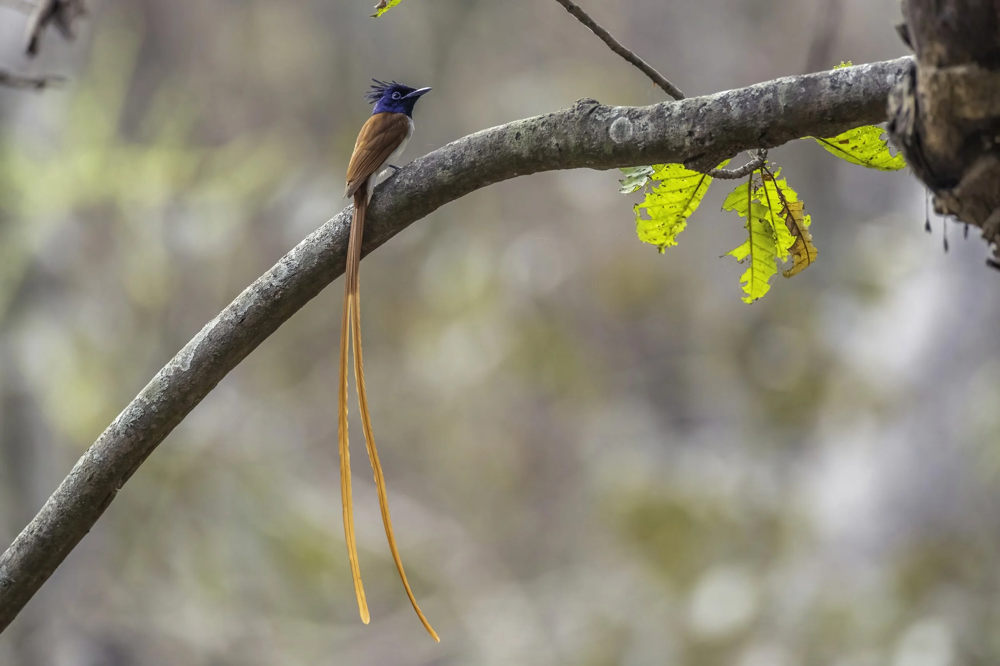
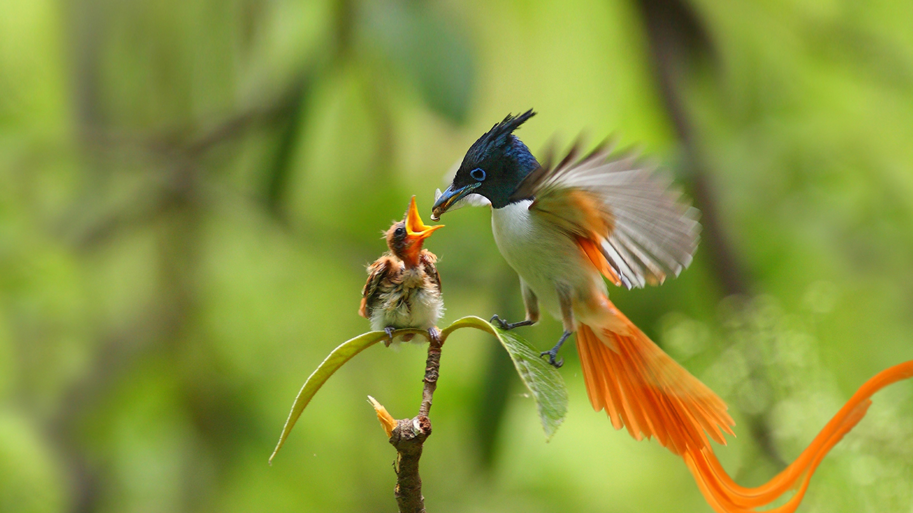
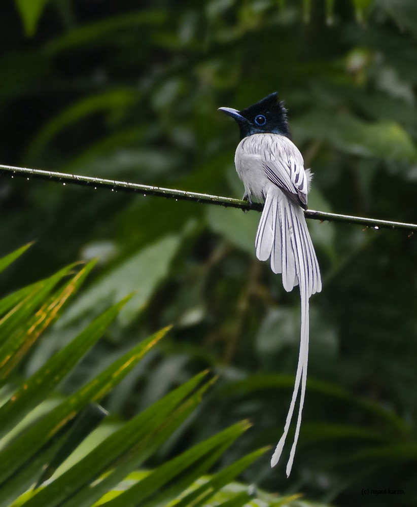

Indian Paradise-Flycatcher
If you are lucky enough to catch a glimpse of a flash of stark white cutting through the dappled green canopy of an Indian woodland, you have likely just crossed paths with the Indian Paradise Flycatcher (Terpsiphone paradisi). Locally celebrated and instantly recognizable, this striking bird is a masterclass in avian elegance. While females and young males sport a rich, warm chestnut plumage, it is the mature adult male that truly steals the show. Transforming into a ghostly white figure with a glossy, midnight-blue crested head, he trails two spectacular, ribbon-like tail streamers that can reach up to 30 centimeters in length—more than doubling his actual body size.
To witness this creature in motion is to watch a living ribbon dance through the air. Despite the seemingly cumbersome nature of their extravagant tails, these flycatchers are astonishingly agile aerial acrobats. They thrive in shaded forests, orchards, and bamboo groves, often putting on dramatic displays as they swoop and dive over forest pools to snatch insects mid-flight or take a quick, splashing bath. For birdwatchers and nature enthusiasts across the subcontinent, a sighting of the Ataavi region’s most graceful resident is always a breathtaking reminder of the sheer artistry found in the wild.

What makes the Indian Paradise Flycatcher particularly fascinating to researchers and birders alike is its remarkable plumage transformation. Young males begin their lives looking almost identical to females, draped in a rich rufous-chestnut coat that provides excellent camouflage within the forest undergrowth. It is only as they mature, typically around their third year, that they cast off their fiery feathers in favor of the iconic, snow-white breeding plumage. This drastic color shift, combined with the sudden growth of those mesmerizing tail streamers, serves a singular, high-stakes purpose: attracting a mate. In the dense canopy, these long white ribbons act as a brilliant visual beacon, signaling to females that the bearer is a strong, healthy, and genetically fit survivor.
Beyond its ethereal beauty, Terpsiphone paradisi is a highly efficient apex predator of the insect world. True to its name, it feeds almost exclusively on flies, beetles, moths, and other winged insects, utilizing a hunting strategy known as "sallying." Perched quietly on a shaded branch, the flycatcher scans its surroundings with keen, dark eyes before launching into the air with sudden, explosive speed. It snaps up its prey mid-flight with a sharp, audible click of its beak, twisting and looping effortlessly through tangled branches before returning to its perch. During the scorching summer months, these aerial displays are often concentrated around forest pools, where the birds break their hunting routines to swoop low, kiss the water's surface for a drink, or plunge briefly to wash dust from their pristine feathers.

When it comes to nesting, the Indian Paradise Flycatcher proves that its elegance extends far beyond its appearance. During the breeding season, which typically peaks between May and July, both the male and female collaborate to construct a remarkably neat, cup-shaped nest. Tucked safely into the fork of a slender lower branch, this architectural marvel is woven tightly using fine twigs, grass, and roots, then meticulously bound together with cobwebs to reinforce its structure. The exterior is often plastered with spider silk and white insect cocoons, acting as a brilliant camouflage that mimics the dappled sunlight hitting the bark. Within this fragile cradle, both parents share the responsibilities of incubating the eggs and aggressively defending their territory from much larger intruders, showcasing a fierce protective instinct that belies their delicate frame.
As a prominent sentinel of the forest understory, the Indian Paradise Flycatcher serves as a vital indicator of a habitat's ecological health. While currently classified as a species of Least Concern globally, its reliance on dense, undisturbed canopies and pristine forest streams makes it highly vulnerable to the creeping threats of habitat fragmentation and deforestation. For the Ataavi community, protecting the shaded woodlands and rural orchards this bird calls home is not just about conserving a single species—it is about preserving the intricate biodiversity of the entire ecosystem. Ensuring that future generations can still witness the breathtaking, ribbon-like flight of this forest phantom requires a collective commitment to conservation, keeping the magic of the Indian wilderness alive, one canopy at a time.
